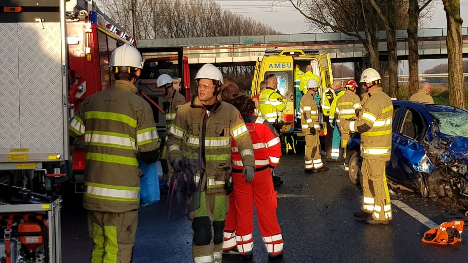

Nieuws uit Almere Buiten

Maaltijdbezorger beroofd in Tussen de Vaarten
Donderdagavond (Sinterklaasavond) werd een maaltijdbezorger beroofd aan de Cézannestraat in Tussen de Vaarten-Zuid. De politie zoekt getuigen.
Volgens de politie reed de 16-jarige bezorger rond 18.30 uur terug naar het restaurant na het afleveren van zijn bestellingen, toen hij ter hoogte van het Skatepark onder de Hagevoortdreef werd tegengehouden door een jongen die de maaltijdbezorger iets wilde vragen. Vervolgens zag het slachtoffer vanuit zijn ooghoek twee andere jongens opduiken waarna hij onder bedreiging van een groot mes werd beroofd van zijn smartphone en draadloze oordopjes.
Het drietal is vervolgens weggerend in de richting van het Matissepad.
Signalementen:
De politie is op zoek naar de drie verdachten.
* De eerste verdachte is vermoedelijk tussen de 14 en 17 jaar oud, erg klein (circa 1.60 meter) en heeft een mollig uiterlijk en vol gezicht. Hij heeft een licht getinte huidskleur en had zwart kort haar. Hij droeg een grijs-zwarte winterjas.
* De tweede verdachte is vermoedelijk tussen de 14 en 17 jaar oud (maar leek ouder) en is circa 1.80 tot 1.90 meter lang. Hij heeft een donker getinte huidskleur en droeg een donkergekleurde winterjas met capuchon.
*Van de derde verdachte is geen signalement bekend.
Tussenring weer open na aanrijding
Bij een ernstige aanrijding op de Tussenring in Almere zijn volgens de politie twee gewonden gevallen. Zeker twee auto's zijn maandagochtend rond 9:00 uur op elkaar gereden.
De hulpdiensten waren maandagochtend massaal ter plaatse. Er werd ook een traumahelikopter opgeroepen.
De Tussenring is vanaf afslag Tussen de Vaarten tot de Hogering afgesloten geweest. Dat duurde tot het begin van de middag.
